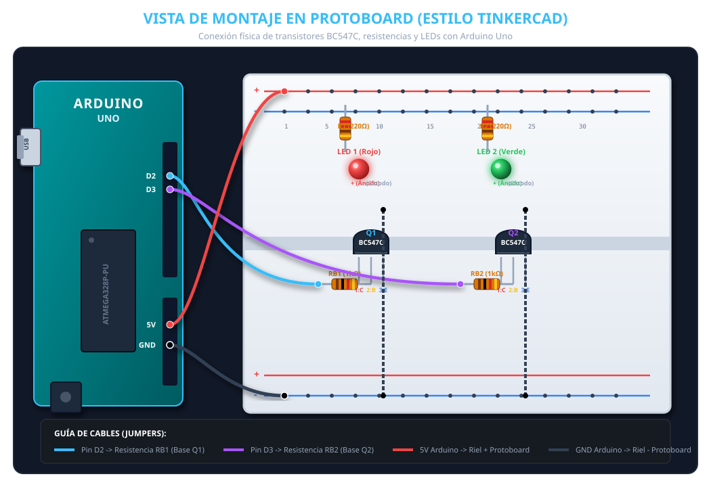

Simulador interactivo en tiempo real y documentación técnica de circuito conmutador NPN
Intervalo: 1000 ms (1 Segundo)LED 1: Rojo
Transistor Q1 (BC547C):
LED 2: Verde
Transistor Q2 (BC547C):
Señal Digital en Tiempo Real (Pines D2 y D3):
| Parámetro | Fórmula / Valor | Resultado |
|---|---|---|
| Ganancia BC547C ($h_{FE}$) | Rango datasheet | 420 - 800 |
| Corriente LED ($I_C$) | $(V_{CC} - V_F - V_{CE(\text{sat})}) / R_{LED}$ | 12.7 mA |
| Resistencia LED ($R_{LED}$) | $(5\text{V} - 2.0\text{V} - 0.2\text{V}) / 12\text{mA}$ | 220 Ω |
| Corriente de Base ($I_B$) | $(V_{\text{Arduino}} - V_{BE}) / R_B$ | 4.3 mA |
| Resistencia de Base ($R_B$) | $(5.0\text{V} - 0.7\text{V}) / 4.3\text{mA}$ | 1 kΩ |
Con la cara plana del transistor mirando hacia ti y las patas hacia abajo:

// Proyecto: Conmutación de Transistores BC547C const int PIN_TRANSISTOR_1 = 2; const int PIN_TRANSISTOR_2 = 3; const unsigned long INTERVALO = 1000; // 1 segundo unsigned long tiempoAnterior = 0; bool estadoQ1 = true; void setup() { pinMode(PIN_TRANSISTOR_1, OUTPUT); pinMode(PIN_TRANSISTOR_2, OUTPUT); } void loop() { unsigned long tiempoActual = millis(); if (tiempoActual - tiempoAnterior >= INTERVALO) { tiempoAnterior = tiempoActual; estadoQ1 = !estadoQ1; // Invertir estado digitalWrite(PIN_TRANSISTOR_1, estadoQ1 ? HIGH : LOW); digitalWrite(PIN_TRANSISTOR_2, estadoQ1 ? LOW : HIGH); } }